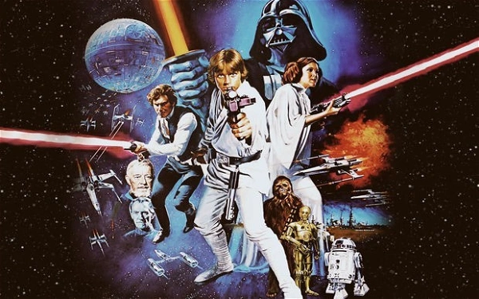
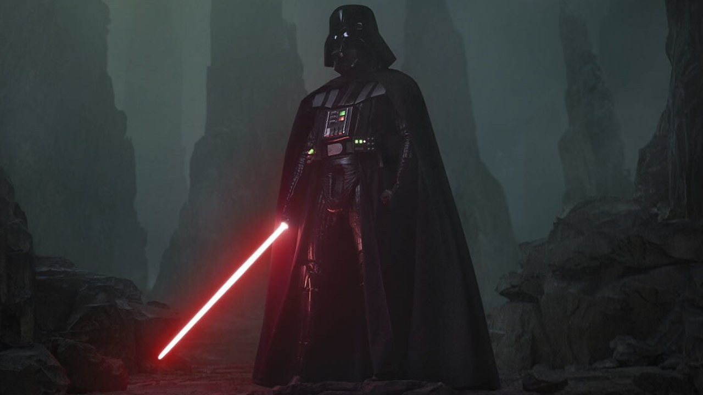
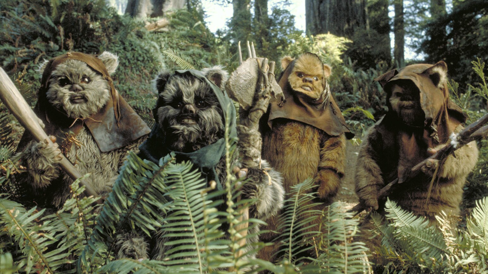
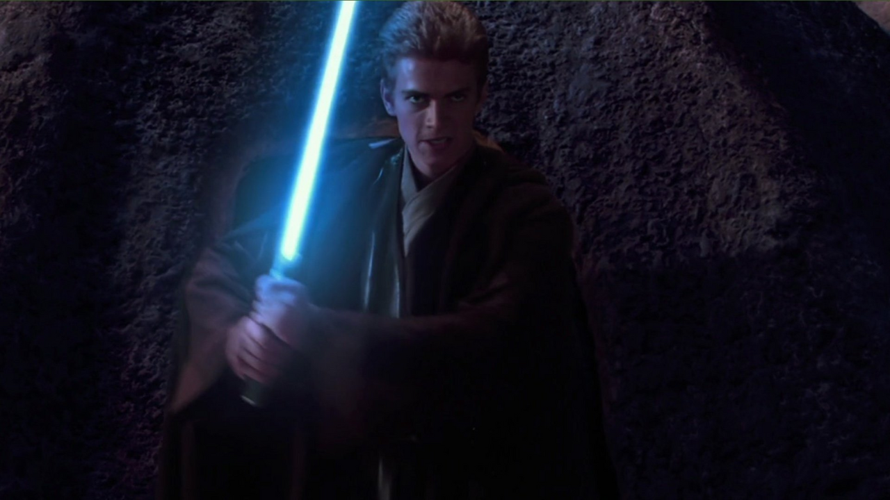
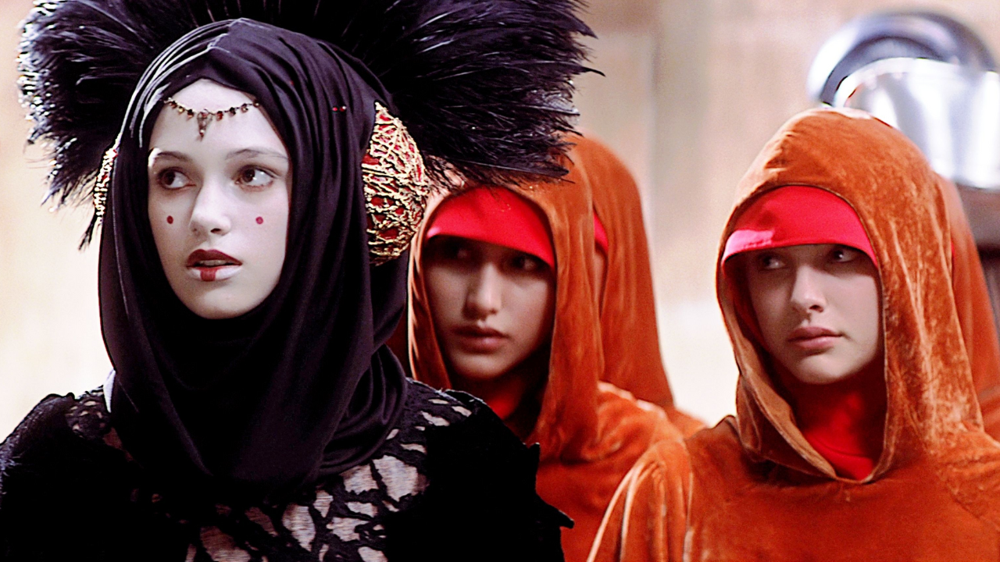

Star Wars é uma série de filmes criada pelo cineasta George Lucas. Lançada em 1977, a franquia tornou-se um ícone da cultura pop, conquistando milhões de fãs ao redor do mundo. Inspirado em clássicos como Flash Gordon, Star Wars buscou influências que vão desde as produções de Akira Kurosawa aos filmes Western.

Capa do filme com personagens principais presentes
Curiosidades
5 curiosidades legais sobre essa franquia.
O som peculiar do maior vilão das galáxias foi criado pelo sonoplasta e designer de som estadunidense Ben Burtt. Ele desenvolveu o som colocando um pequeno microfone no bocal de um respirador de mergulho e gravou o som de sua própria respiração.

Personagem Darth Vader segurando uma espada vermelha
A famosa língua falada pela tribo do Ewoks foi baseada no tibetano. Ao assistir um documentário sobre o tibetano (idioma da Região Autônoma do Tibete da República Popular da China) na BBC, Ben Burtt se inspirou e usou gravações de falantes nativos como base para os sons que se tornaram o idioma Ewok.
Criaturas armadas e atentas

Originalmente, George Lucas havia pensado em Darth Vader como um caçador de recompensas intergalático. Porém, depois do desenvolvimento do personagem, decidiu deixar o conceito do caçador para Bobba Fett. Além disso, o diretor e sua produção considerarem revelar na produção dos prelúdios que Darth e Bobba seriam irmãos, mas desistiu da ideia por considerá-la "muito clichê".

Anakin Skywalker segurando uma espada azul
Atualmente conhecida como diretora dos filmes 'Encontros e Desencontros' (2003) e 'As Virgens Suicidas' (1999), Sofia Coppola atuou em 'Star Wars, Episódio I: A Ameaça Fantasma' como Saché, uma das acompanhantes de Padmé Amidala.
Da esquerda para direita: Keira Knightley, Sofia Coppola e Natalie Portman em Episódio I – A Ameaça Fantasma

E quem disse isso foi o próprio George Lucas. Em 1978, o especial 'The Star Wars Holiday Special' foi exibido uma única vez e, na trama, Chewbacca precisa voltar ao planeta de origem para passar as festas de fim de ano com a família. Porém, o diretor considera o especial tão desastroso que renega totalmente sua existência.